School of Earth, Ocean, and the Environment
Integrated Systems Hydrology Lab
We are an interdisciplinary lab that integrates remote sensing, mechanistic and machine learning models, field observations, and community based knowledge to address complex hydrological challenges. We consider the interactions between surface water, groundwater, climate, land use, and human activities to develop a holistic understanding of water resources.
News
- Apr 2026: Ashley's proposal on the hydrology of orange rivers in Alaska was fund through the Undergraduate Research Campus Partner Grant.
- Mar 2026 - New Publication: Newman, A. J., Cheng, Y., Blaskey, D., Herman-Mercer, N. M., Craig, A. P., Koch, J., ... & Musselman, K. N. (2026). Long-Term Regional Hydroclimate Modeling for Communities and Decision-makers Across Alaska and Northwestern Canada. Read the article.
- Feb 2026: New Lab Member: Welcome to the lab Liam Baker!
Our Joint Lab Group
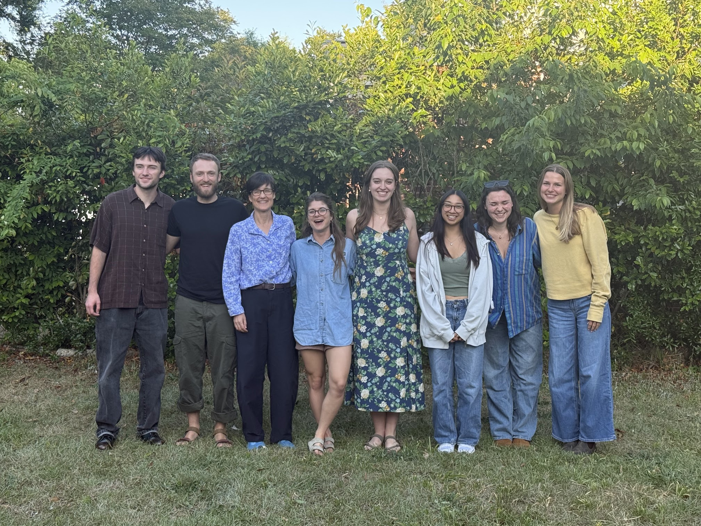
Photos from the Field
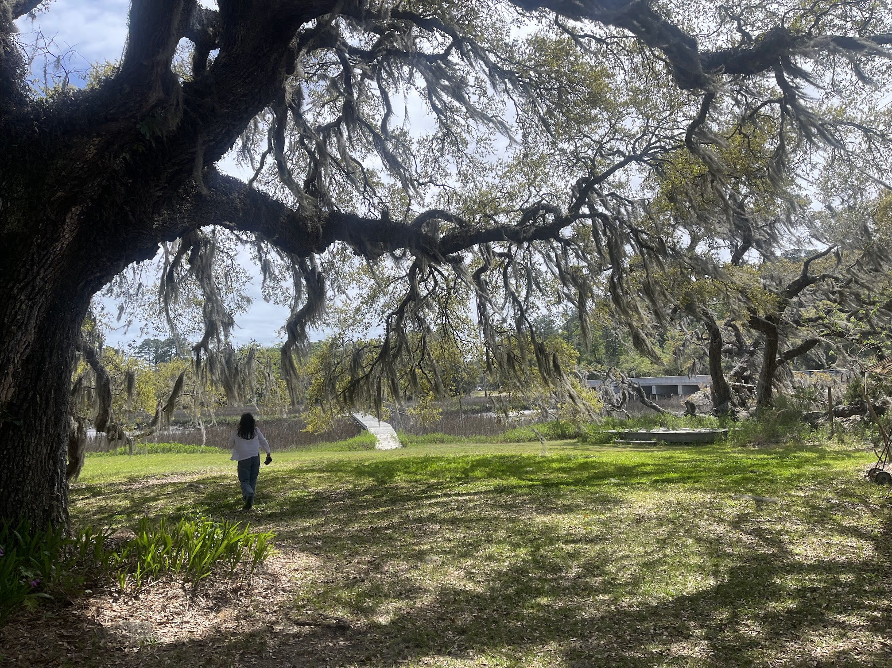
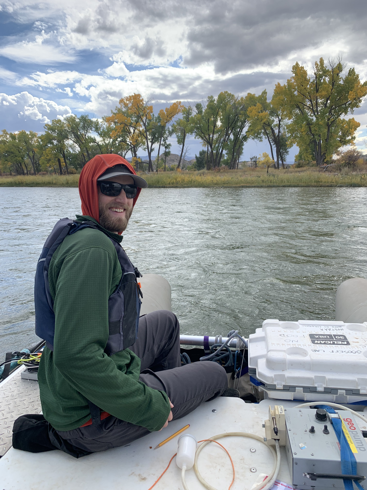
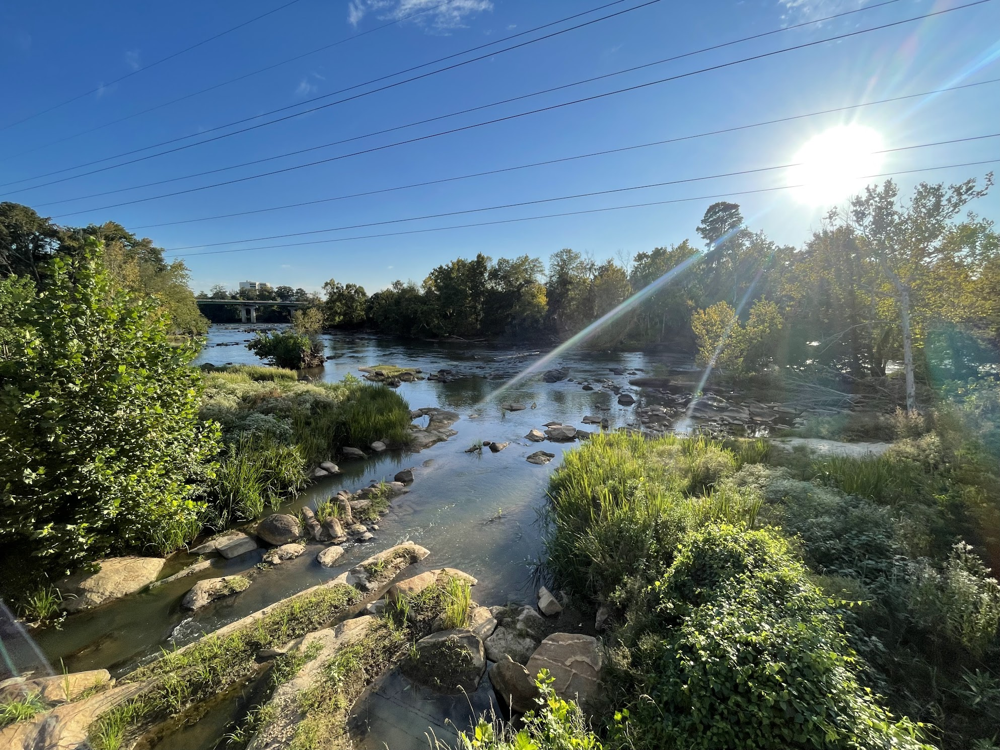
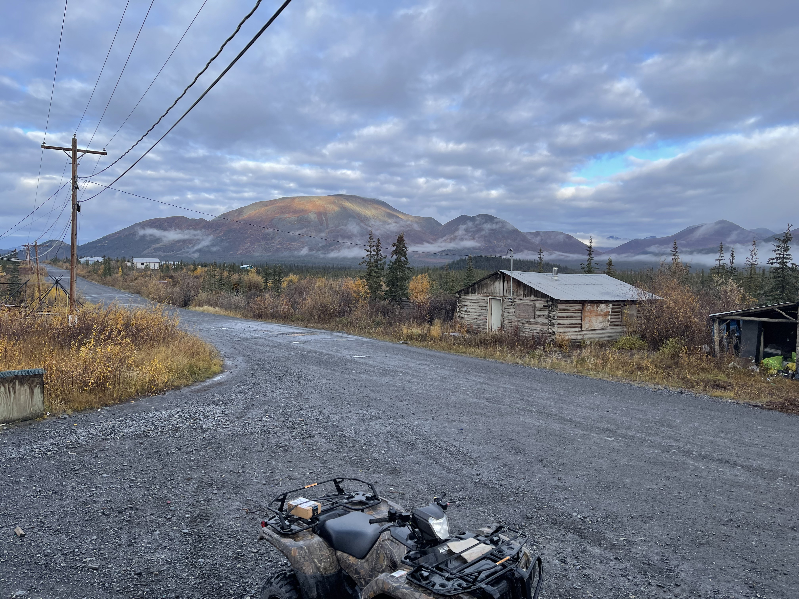
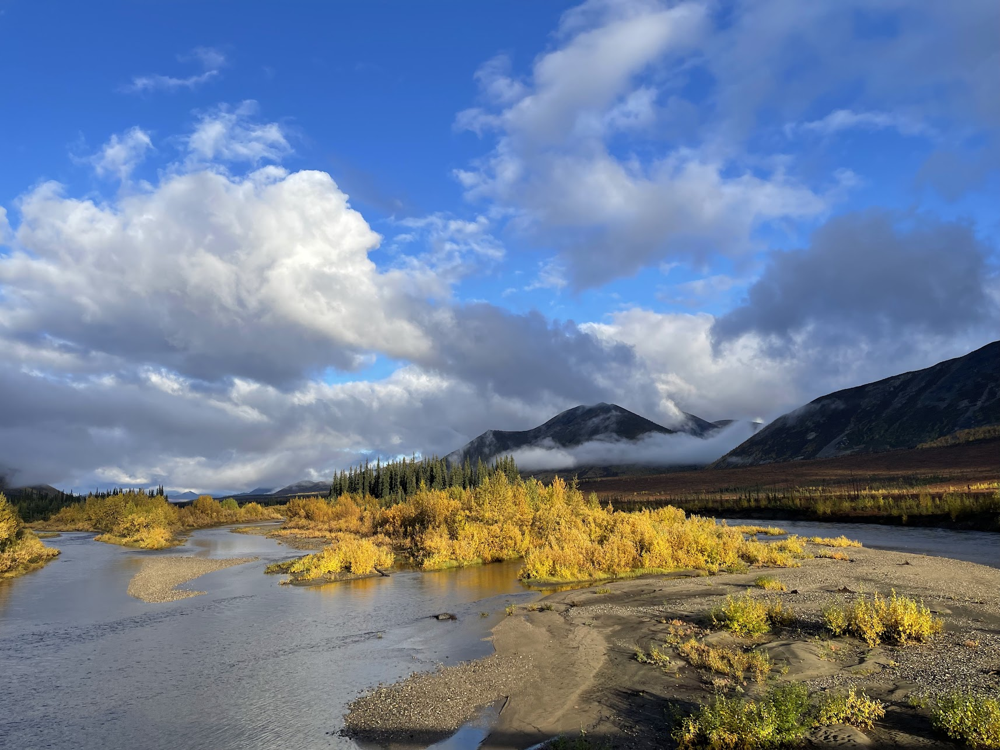
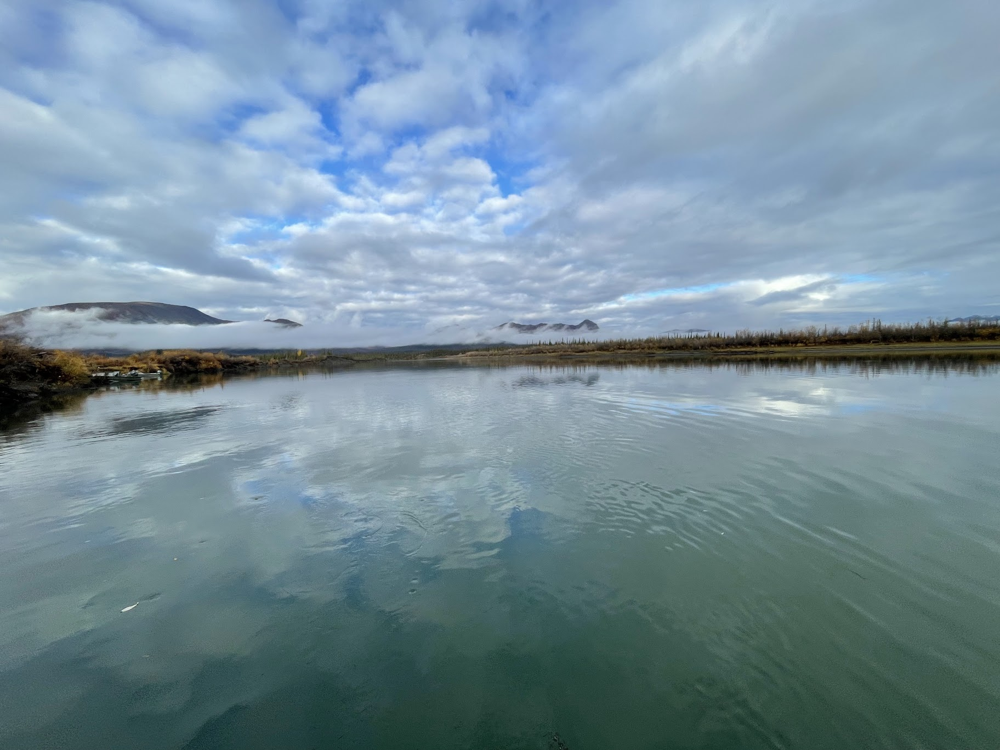
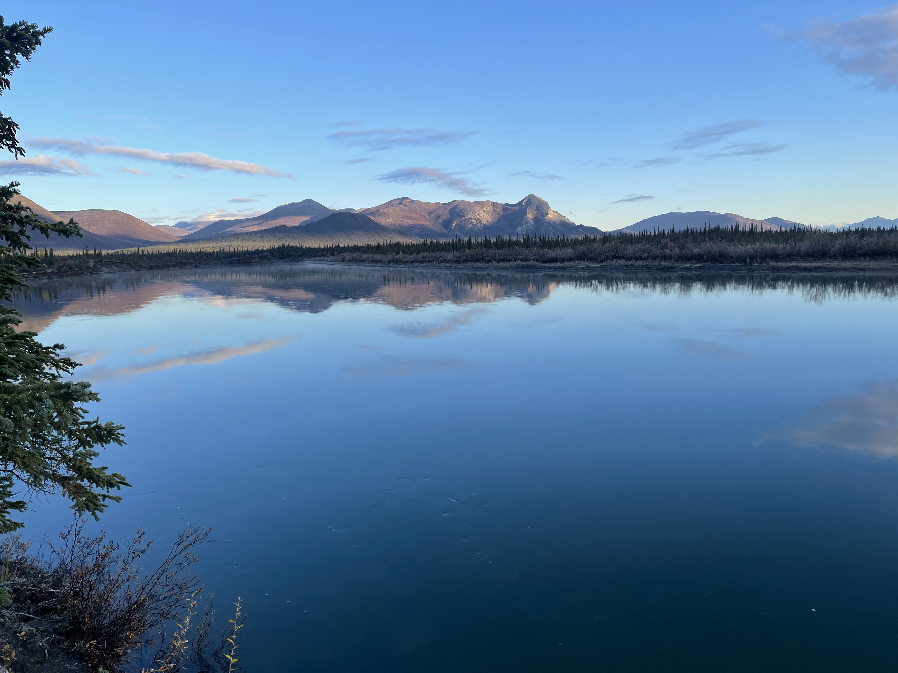
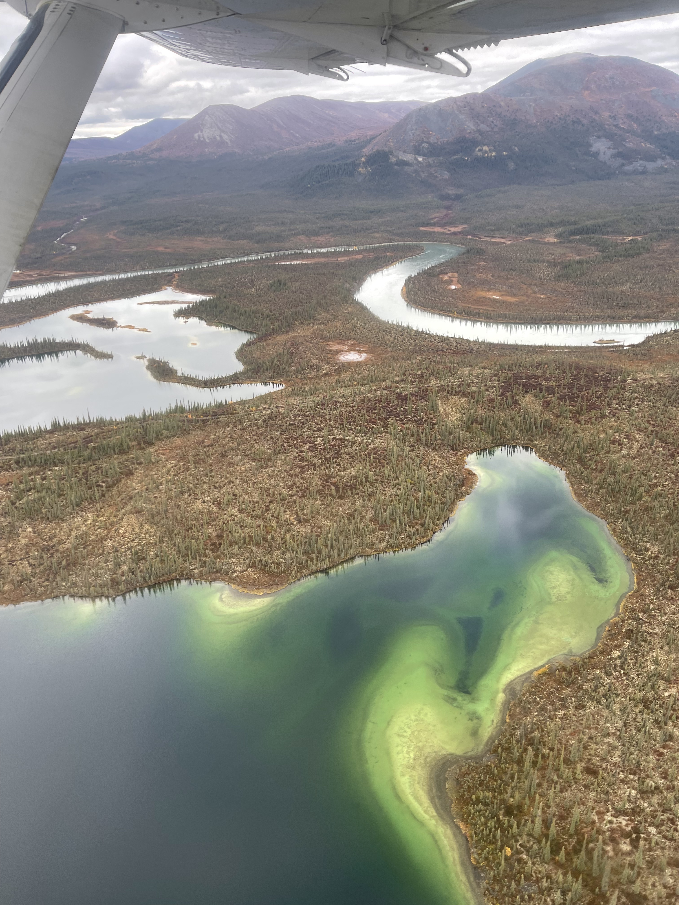
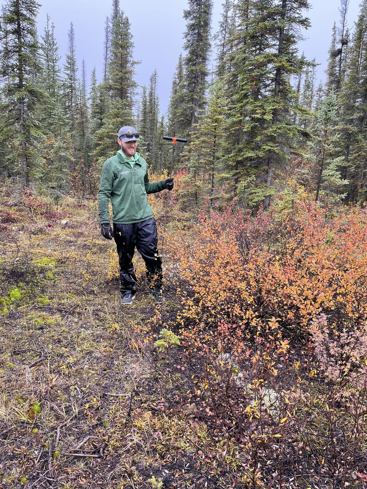
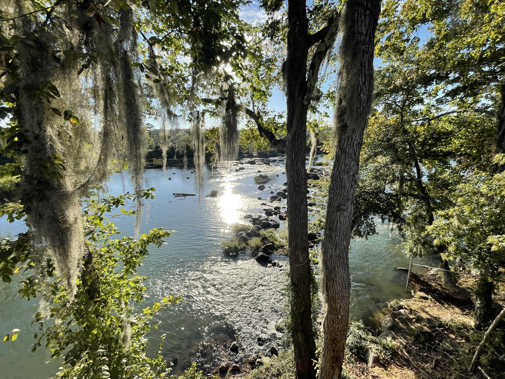